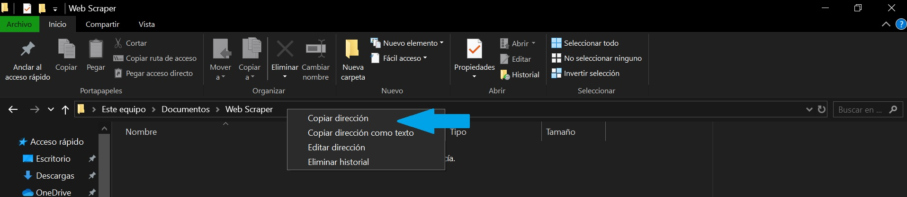

Preguntas Frecuentes
Sistema Operativo : Windows
Es fácil, descargar el zip y descomprimir los archivos en una carpeta. A continuación ejecute la consola de comandos,
dirijase a la ubicación del archivo y una vez allí, escriba webscraper.exe en CMD o ./webscrapper.exe en Powershell Si no conoce bien el como usar la consola de comandos dirijase a la seccion
"Usar la consola de comandos" en el presente Manual.
Una vez ejecutado usted se encontrará en el menu principal, aquí, usted puede elegir la acción que desea realizar seleccionando la opcion correspondiente en la consola
y luego tocando Enter. De esta manera se realizara la opción que usted haya seleccionado y el programa preguntará si desea realizar otra accion.
Si elige afirmativamente volverá al menu principal, y en caso contrario el programa se cerrará.
Primero, es necesario, averiguar la ruta para acceder al programa para esto dirijase a la carpeta donde descomprio el archivo
y luego haga click derecho en la barra de direcciones y seleccione "Copiar Dirección".

Ahora es necesario abrir la consola, para esto, en windows presione simultaneamente la tecla "windows" o "inicio" y "R", a continuación se abre una ventana en la cual
debera escribir cmd y presionar ejecutar. Una vez abierta la consola escriba cd y pegue la ruta copiada. Debe quedar parecido a lo siguiente
cd C:\Users\Windows 10\Documents\Web Scrapper
Una vez este posicionado en la carpeta del ejecutable, escribawebscraper.exe
Si desea crear un archivo .CSV debe elegir la opción "Exportar listado en un archivo CSV", una vez generado el archivo, puede ser editado con Microsoft Excel o programas similares
Si desea crear un archivo .HTML debe elegir la opción "Exportar listado en un archivo HTML resaltando con color las filas cuya apertura es mayor al precio compra/venta", una vez generado el archivo, puede ser abierto con su explorador predeterminado, por ejemplo google Chrome.
Si desea ver el listado por la pantalla de la consola elija la opción "Listar en pantalla las acciones cuya variacion fue mayor a "